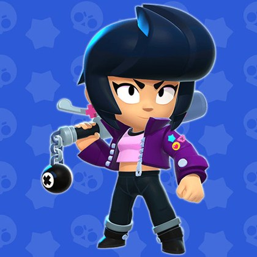
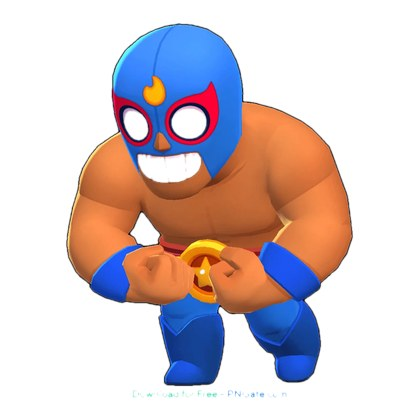
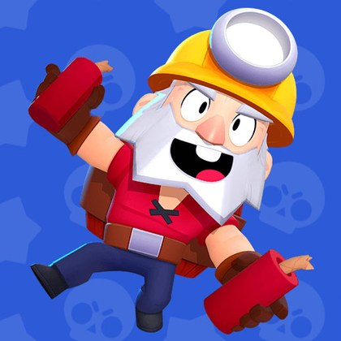
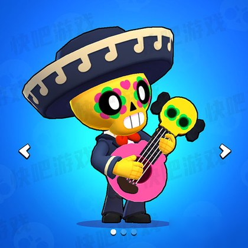
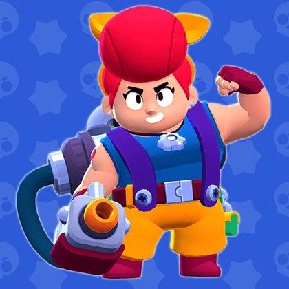
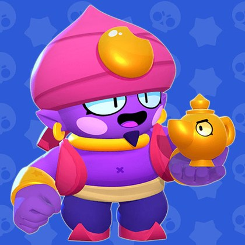

火力输出
Damage Dealer
比比职责
在中近距离稳定制造伤害，逼对手交出位移或治疗，为队友创造推进空间。
打法要点
- 先站住安全位置再输出，别为了补伤害走出掩体。
- 优先打“最容易命中”的目标，而不是一直追残血。
- 技能用来抢节奏：雪莉的大招拆墙、比比的击退赶人，都比单纯打伤害更值。
适合人群：喜欢主动接战、对走位有信心的玩家。
一支三人队伍里，谁负责开团、谁负责输出、谁负责续航？先分清五种定位的职责，选人时就不会五个人全挤在同一条路上。

比比在中近距离稳定制造伤害，逼对手交出位移或治疗，为队友创造推进空间。
适合人群：喜欢主动接战、对走位有信心的玩家。

普里莫吸收第一轮火力、开团、拆掩体，把敌人的注意力从队友身上拉走。
适合人群：愿意承担风险、看得懂队友位置的玩家。
远距离消耗、封锁通道、把对手挡在目标区域之外，是最吃地形理解的一类。
适合人群：耐心、喜欢算距离和预判的玩家。

爆破麦克用落点、减速、拉人或炮台改变战场形状，让对手只能走你希望他走的位置。
适合人群：喜欢动脑、擅长预判对手路线的玩家。

波可
帕姆
吉恩延长队伍在场时间，用治疗、拉扯和抓人把均势变成优势。
适合人群：大局观好、愿意当幕后功臣的玩家。
Team composition
三人队伍最稳的结构通常是“一个能扛、一个能打远处、一个能改地形或续航”。
| 模式 | 缺什么补什么 | 示例三人组 | 思路 |
|---|---|---|---|
| 宝石争霸 | 控中场 + 续航 | 公牛 / 佩佩 / 帕姆 | 坦克压住宝石井，射手在外围清人，治疗台保证续航。 |
| 乱斗足球 | 开团 + 击退 | 弗兰肯 / 塔拉 / 雪莉 | 眩晕或拉人开局，击退类技能把对手挡在球门外。 |
| 金库攻防 | 拆墙 + 高爆发 | 布洛克 / 柯尔特 / 达里尔 | 先拆开保险库周围的掩体，再用爆发伤害强拆。 |
| 赏金猎人 | 远程消耗 + 收割 | 佩佩 / 乌鸦 / 罗莎 | 远程先压血线，坦克在星标优势时负责拖时间。 |
| 热区争夺 | 区域控制 + 治疗 | 帕姆 / 巴利 / 罗莎 | 酒瓶封入口，治疗台守区域，罗莎站圈里硬扛。 |
| 淘汰赛 | 视野 + 抓单 | 斯派克 / 吉恩 / 比比 | 先互相探视野，抓到落单的人就一波集火带走。 |
示例阵容只是思路示意。实际对局要看地图、对手阵容和队友的英雄池，硬凑“标准答案”往往不如拿自己熟练的英雄。
想查具体英雄的技能？英雄图鉴里有 24 张卡片，支持按定位筛选。
← 返回主页